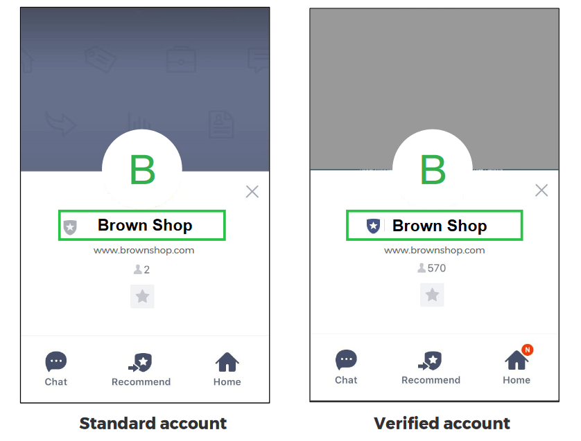

‘Akun standar’ : akun yang yang belum ter verifikasi sebagai akun resmi LINE@ dan memiliki perisai warna abu-abu (Grey Badge)
‘Akun yang disetujui’ adalah akun yang sudah ter verifikasi sebagai akun resmi LINE@ dan warna perisai nya akan berubah menjadi biru tua (Blue Badge)
Memverifikasi akun LINE@ Anda = klaim akun resmi organisasi Anda dan menghindari adanya akun palsu yang meniru akun Anda
Semua akun baru di LINE@ akan berwarna abu - abu dan hanya akan berubah menjadi biru apabila Anda mendaftar kan akun LINE@ Anda untuk ‘disetujui/ approved / verified

Untuk Step by step membuat akun Line@ anda menjadi verified silahkan download atau baca pdf berikut: Klik Disini